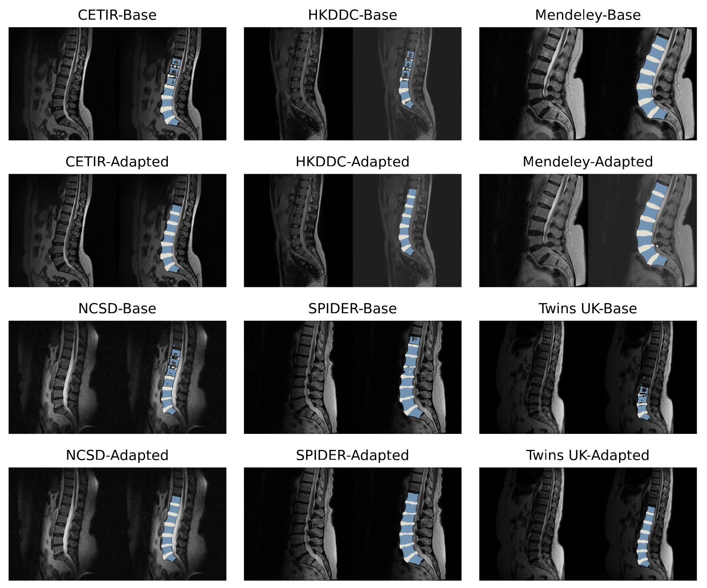
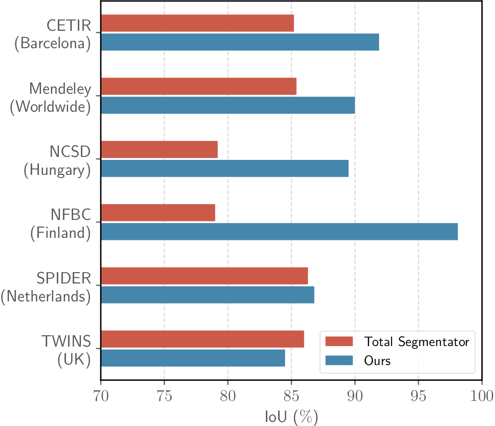
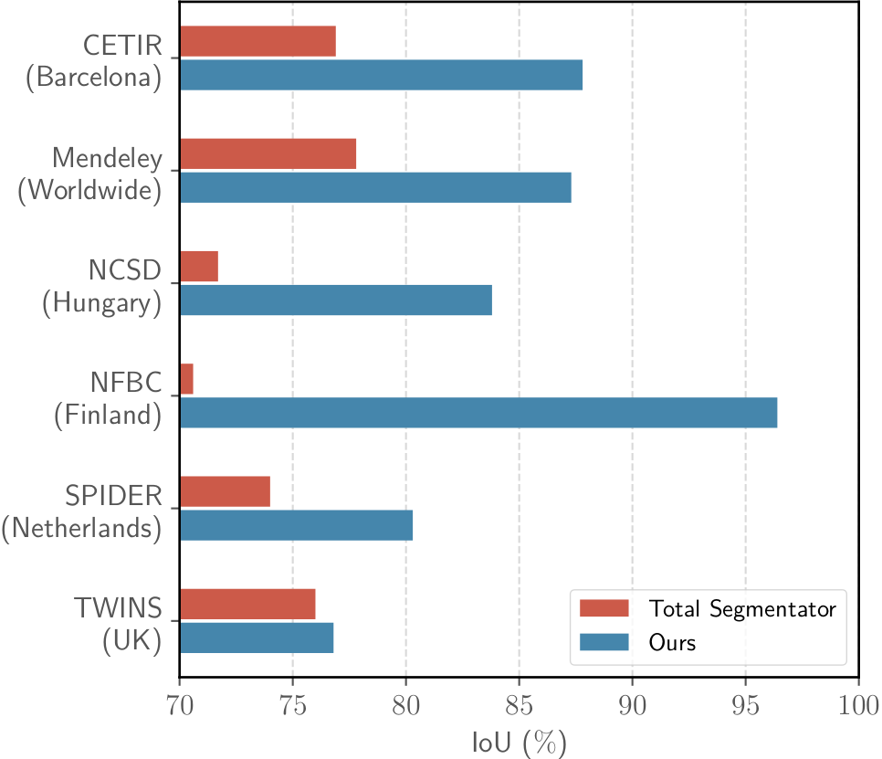
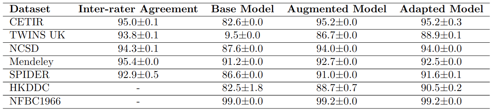

SPINESLICER: EXTERNALLY VALIDATED DEEP LEARNING MODELS FOR LUMBAR SPINE SEGMENTATION, GRADING AND DISC HEIGHT INDEX CALCULATIONS
Narasimharao Kowlagi, Antti Kemppainen, Terence McSweeney, Simo Saarakkala, Jerome Noailly, Frances MK Williams, Jason Pui Yin Cheung, Jaro Karppinen, Huy Hoang Nguyen, Aleksei TiulpinAbstract
This study introduces deep learning models for automated lumbar spine segmentation and grading with disc height index calculation via a 3D Slicer extension. Leveraging diverse datasets, we enhance model generalizability and accuracy, facilitating efficient exploration of complex phenotypes related to low back pain and their biopyschosocial factors.
Results




Comparison of segmentation performance (Dice similarity coefficient; DSC) between the base model, the augmented model, and the adapted model on six external datasets. The base model was trained on the NFBC1966 dataset. Inter-rater agreement (DSC) is also reported for five of the datasets.